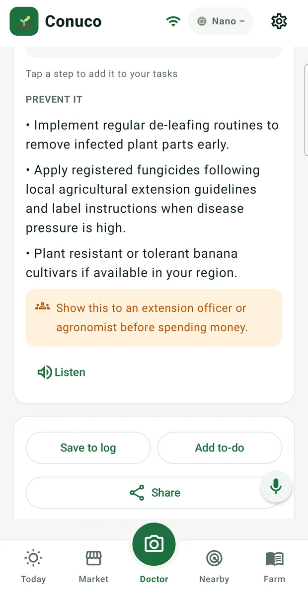
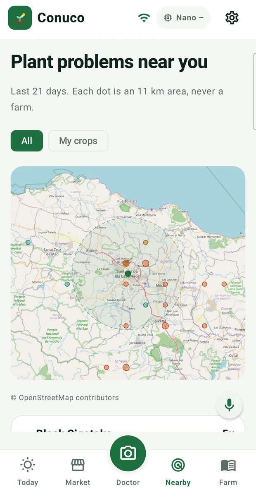
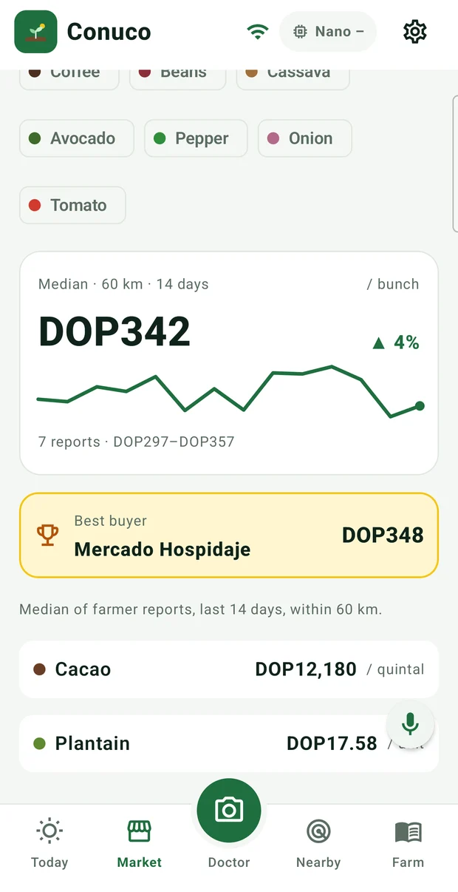

Answer on the phone
Problem, how sure it is, what to do now and how to prevent it. Nothing leaves the device, so it also works with no signal.
On this device · photo never left
Black Sigatoka · 70% · 33 s
Firebase AI Logic · Gemini Nano on the device · Offline first
Conuco reads a photo of a sick leaf with Gemini Nano on the farmer's own device, turns the forecast into clear decisions (spray, water, scout), shares market prices and outbreak warnings between neighbours, and keeps the whole farm log working with no connection.
Spanish and English · built for the Dominican Republic first, works anywhere · free, no ads


Real screens from the Android app · Gemini Nano on the phone
How it works · hybrid by design
Conuco tries the phone first. The cloud is used only when it helps, and only after the farmer says yes.
ONLY_ON_DEVICE.
Problem, how sure it is, what to do now and how to prevent it. Nothing leaves the device, so it also works with no signal.
Conuco asks first. Only on "yes", Gemini in the cloud (ONLY_IN_CLOUD) reads the same redrawn photo, and Conuco shows whether the two opinions agree.
Before any AI: farm rules. Safe spray windows, a 3-day FAO-56 water balance and hours of leaf wetness run offline, with no guessing.
Fresh questions: grounded. This week's prices or programmes can use the cloud with Google Search grounding and sources. Everything else stays on the device, also by voice.
Times are real test runs: on-device in Chrome with Gemini Nano, cloud with Gemini through Firebase AI Logic.
Features




On-device AI needs Chrome on a desktop with Gemini Nano (about 22 GB free disk and a GPU with more than 4 GB of VRAM, or 16 GB of RAM). Without it, Conuco uses the cloud after asking, or the symptom guide.